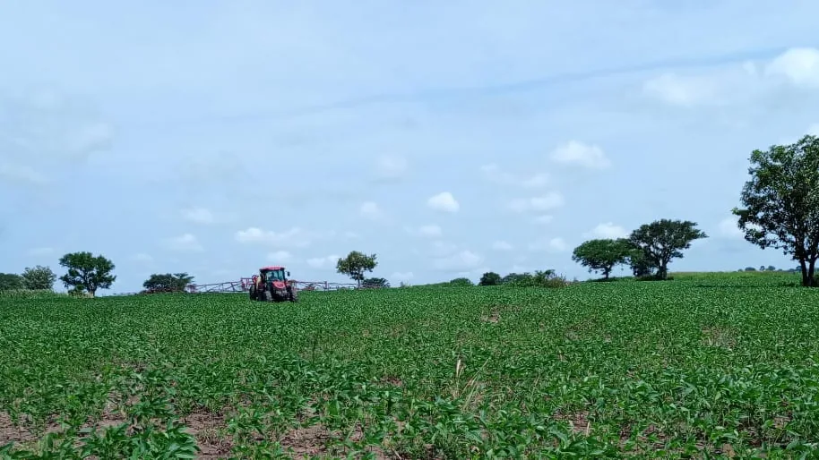
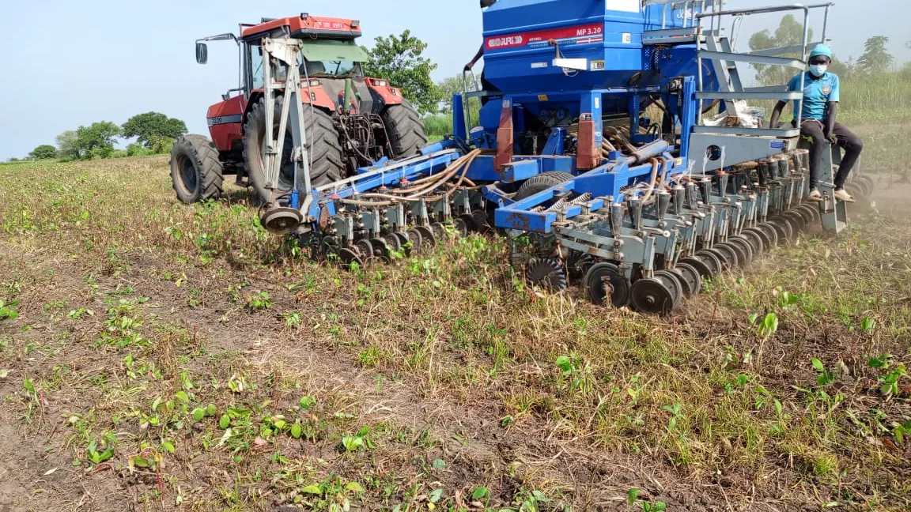
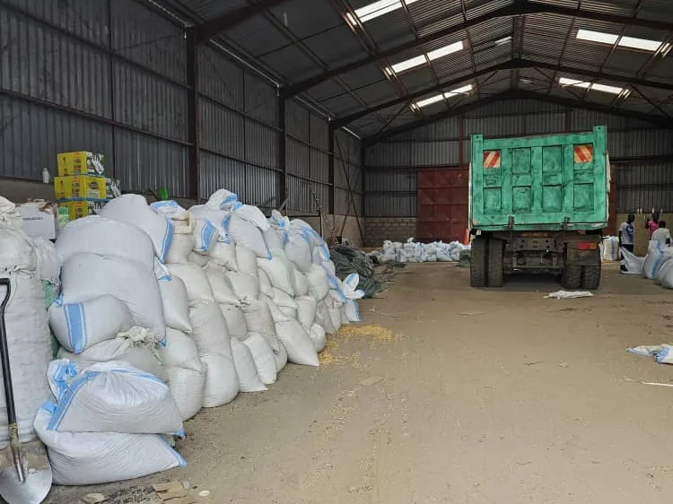
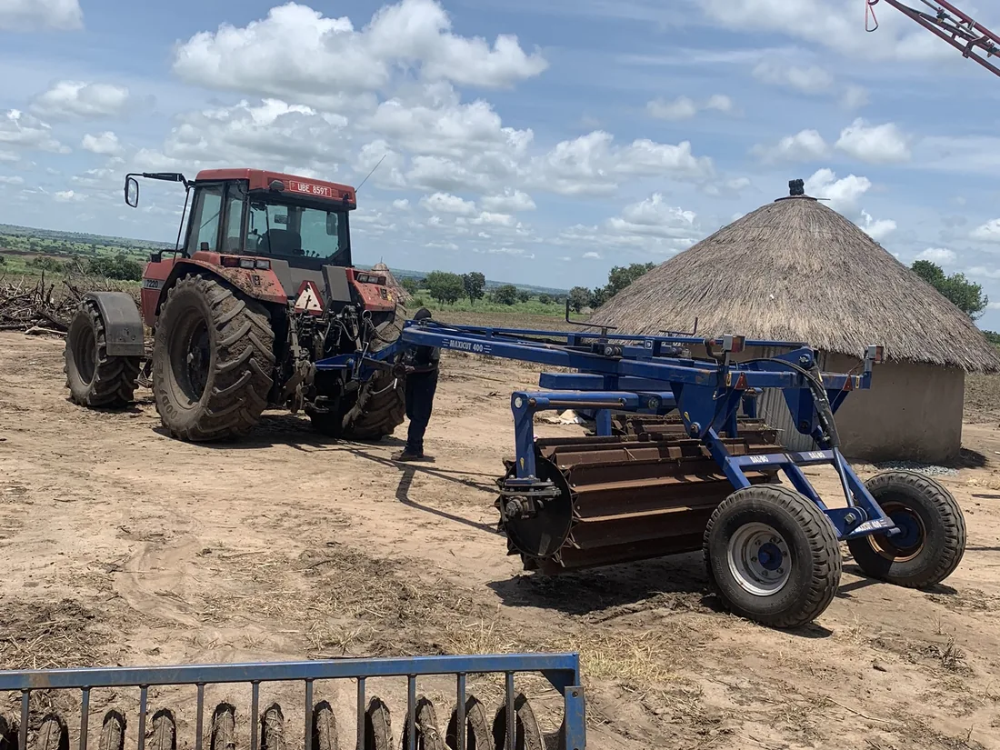
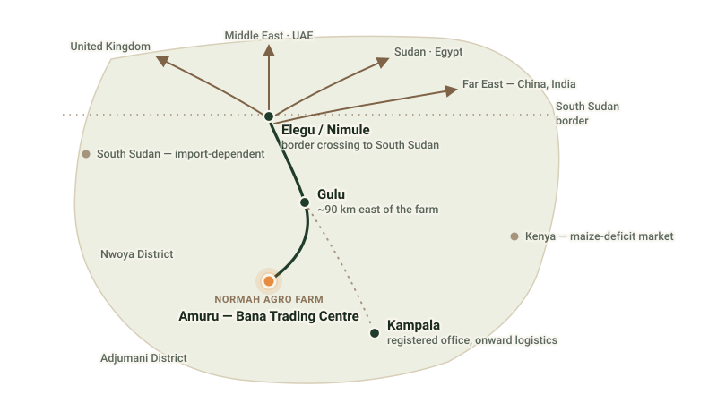

Bana Trading Centre, Amuru District.
Roughly 90 km west of Gulu town, bordering Adjumani and Nwoya districts, close to the South Sudan border — one mechanised operation on one block of land.
Location and climate
Normah's farm sits at Bana Trading Centre in Amuru District, in Uganda's far north, roughly 90 km west of Gulu town. It borders Adjumani District to the north and Nwoya District to the south, close to the South Sudan border and the Elegu/Nimule crossing.
Amuru's bimodal rainfall gives the farm two growing seasons: Season A runs from early March to June; Season B runs from July to December and carries the longer rains. This supports double cropping without irrigation for most of the farm's cereals, with roughly three crops intercropped per season.

Land under production
Mechanisation

Water
A borehole and irrigation water tower supply the farm, supporting rice in Season B and providing a buffer for the farm's other crops during dry spells.

Storage
Grain is stored today in the farm's 450 sqm warehouse. A silo with a processing area, a weighbridge, a walk-in bagging area and a washing and grading area with stainless steel tables are planned additions to this capacity Planned — none of this planned infrastructure is built yet, and no date is set.

Housing and on-site staff
The farm includes on-farm housing for staff and management, supporting a resident operating team through both growing seasons.

On the corridor north
Amuru's position on the road corridor toward Elegu/Nimule puts Normah closer to the South Sudan market than most competing operations further south.
